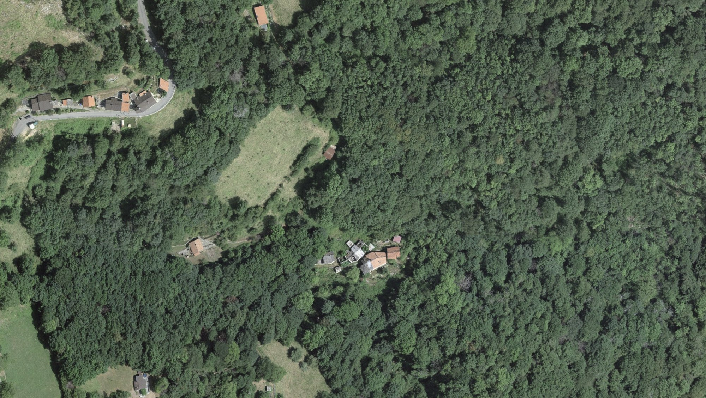
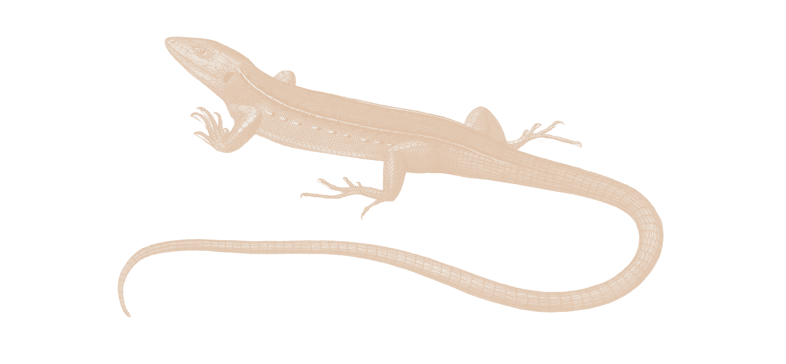

Casiroli è un piccolo nucleo storico in Valle di Muggio, poche case raccolte nella faggeta vicino a Scudellate, proprio nel punto in cui il bosco si apre improvvisamente alla Valle. È un insediamento minimo, un luogo in cui l'architettura vernacolare, i prati da sfalcio e i pendii terrazzati concorrono a formare un sistema coerente, capace ancora oggi di raccontare la storia di un abitare rurale, oramai diradatosi. Ma qui, come in molte altre regioni di montagna, l'esaurirsi della vita contadina ha innescato una profonda trasformazione ecologica e paesaggistica. Il bosco sta riconquistando i terrazzamenti, i margini ecotonali si stanno riducendo e le strutture architettoniche, un tempo abitate, stanno crollando. Così, ad erodersi, non è solo il valore ecologico e materiale del nucleo, ma anche la memoria e la conoscenza di quelle pratiche che, una pietra posata e un colpo di falce alla volta, hanno nei secoli modellato uno dei più bei paesaggi svizzeri.


 3.
3.
Se per ora Casiroli resiste – riuscendo, nelle dismesse sembianze attuali, a restituire agli sporadici visitatori una testimonianza della sua storia – l'abbandono in cui versa ne minaccia severamente l'integrità. Eppure la sua natura e la sua storia, se conservate, possono ancora essere interpretate, comprese e trasmesse. In questo senso il nucleo non rappresenta un frammento relitto di un passato da proteggere, ma un intreccio di relazioni vive, ancora capaci di dialogare con il presente. La fitta e fragile rete di relazioni ecoculturali, oggi sedimentate, non è sola rimanenza: è un invito all'esplorazione dei nostri luoghi e della nostra storia, per quelle vie in cui il paesaggio si rivela memoria collettiva, e la memoria collettiva, paesaggio.

fotografia rinvenuta in loco
specie minacciata e protetta,
osservata a Casiroli
 5.
5.
Il progetto nasce con l'obbiettivo di valorizzare e rigenerare il nucleo, dapprima indirizzando gli sforzi all'edificio centrale, il più grande e in miglior condizione. L'associazione intende inserire il proprio operato nella traccia delle pratiche sospese: ne immagina il proseguimento e ne cura la realizzazione.


osservata nella regione

L'acquisizione dell'immobile centrale costituisce il presupposto operativo per garantire l'accesso e il coordinamento degli interventi. Sebbene una parte significativa dei fondi destinati all'acquisto sia stata raccolta grazie al contributo dei membri dell'associazione, la vitalità del progetto dipende ancora dai finanziamenti necessari al suo sviluppo nel lungo periodo.
Nelle fasi successive il progetto prevede la valorizzazione dei terrazzamenti, la manutenzione dei muri a secco, la gestione delle superfici aperte e la messa in sicurezza degli edifici esistenti. Gli interventi su acqua, smaltimento, impianti ed elementi costruttivi verranno definiti in relazione alle particolari condizioni del luogo: accessibilità limitata, assenza di infrastrutture, vincoli legati alla protezione delle acque e allo statuto degli edifici fuori zona edificabile.
Il progetto non è guidato dalla volontà di ristabilire uno stato precedente ma dalla necessità di mantenere operative le relazioni tra le sue parti, così da rendere il sito nuovamente abitabile. Le modalità d'intervento previste privilegiano la combinazione di competenze e approcci diversi, al fine di favorire lo scambio intergenerazionale e la trasmissione di conoscenze. I gruppi di lavoro opereranno dunque su scala ridotta, in modo non continuativo, in base alle esigenze specifiche del sito.


Casiroli è molte cose: uno spazio multiforme, uno spazio multispecie, uno spazio collettivo. È un luogo in cui pratiche, processi ecologici e presenza umana coesistono e assumono nel tempo configurazioni variabili.
È un habitat condiviso, in cui le relazioni tra umani e non umani concorrono a definirne la mutevole identità.
È una dimora temporanea, che si rende accessibile a gruppi e a individui, e in cui la partecipazione garantisce la manutenzione e il perpetuarsi delle pratiche di gestione.
Ma soprattutto è ciò che è ancora da venire. L'associazione non definisce infatti un esito formale ma una condizione operativa: mantenere il sito vivo per permettere il continuo rinnovarsi di Casiroli.



minacciata e protetta
L'associazione Bivio Casiroli nasce per contrastare l'abbandono del nucleo e promuoverne la rigenerazione attraverso un processo di manutenzione fondato sulla riadozione di pratiche collettive di cura e presenza.

Il comitato promotore è composto da sei persone tra i trenta e i quarant'anni, con competenze multidisciplinari e un forte radicamento nel territorio. Il gruppo riunisce un'agronoma della valle, una giovane regista, un ecologo, un operatore sociale, un architetto specializzato in costruzioni rurali e un'esperta di politica agricola europea. Questa diversità permette una gestione multidimensionale e consente al progetto di radicarsi in un tessuto di relazioni già attive: associazioni agricole, enti di tutela del paesaggio, cooperative sociali e realtà culturali del Cantone.

È possibile contribuire al progetto attraverso una donazione libera, destinata all'acquisizione del primo immobile e all'avvio delle attività di recupero e gestione del nucleo. I fondi raccolti sosterranno gli interventi prioritari sul paesaggio e sugli edifici, la manutenzione delle superfici aperte e la realizzazione delle prime infrastrutture necessarie alla presenza sul sito. Ogni contributo rappresenta un sostegno concreto alla salvaguardia e alla valorizzazione di un fragile patrimonio paesaggistico e culturale della Valle di Muggio e concorre così a mantenere vivo un luogo in cui memoria, pratiche e dinamiche ecologiche continuano a intrecciarsi nello spazio e nel tempo.
 14.
14.
Come donare
La donazione può essere effettuata tramite bonifico bancario, utilizzando il codice IBAN e il QR-code riportati qui accanto. La maggior parte delle app bancarie svizzere permette di scansionare direttamente il codice QR per compilare automaticamente i dati del pagamento.
Nella causale del bonifico vi chiediamo di indicare il vostro nome e cognome, così da poter associare correttamente il contributo e, se lo desiderate, ringraziarvi personalmente.
Per qualsiasi domanda o per ricevere conferma della donazione potete scriverci a biviocasiroli@etik.com.
Associazione Bivio Casiroli
CH66 8080 8005 3949 6868 1


sede dell'Associazione